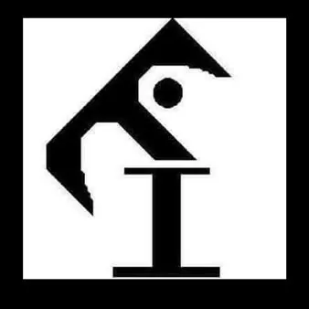

da gio 15 ott a dom 18 ott
Teatro Incontro - Spettacoli della settimana
Giovedì 15 ottobre ore 20:30 TEATRO DELL'ANGELO via Risorta, 3 - Trieste IL RE MUORE di Eugène Ionesco adattamento e regia di Francesco Facca ingresso: a offerta libera Re Bérenger, sovrano dell’Universo, è tricentenario e non sa ancora che dovrà morire; viene colto alla…
 Indicazioni
Indicazioni
- Costi e prenotazioni
- Costo non indicato · Prenotazione non indicata
- Programma
- Programma da verificare. Apri la fonte ufficiale per orari e possibili aggiornamenti.
- In caso di maltempo
- Nessuna indicazione specifica pubblicata.
- Note
- Acquisito automaticamente dalla fonte.
L’EVENTO
Descrizione completa
Giovedì 15 ottobre ore 20:30
TEATRO DELL'ANGELO via Risorta, 3 - Trieste
IL RE MUORE
di Eugène Ionesco
adattamento e regia di Francesco Facca
ingresso: a offerta libera Re Bérenger, sovrano dell’Universo, è tricentenario e non sa ancora che dovrà morire; viene colto alla sprovvista dalla Morte stessa. Le due regine, Marie e Marguerite, venute a conoscenza del suo stato grazie al medico, chirurgo, boia, batteriologo e astrologo di corte, discutono a lungo se sia il caso di rivelare la nefasta notizia al loro marito e sovrano. Alla fine la notizia viene rivelata a Bérenger che, incredulo, non vuole convincersi della sua imminente morte; il sovrano si crede ancora in possesso del potere sugli elementi della natura e sulle persone ma, inesorabilmente, scopre che la sua malattia non gli ha lasciato nessuna forza e invano, ordina alla natura e agli uomini che nemmeno gli rispondono.
___________________________________________
Sabato 17 ottobre ore 18:00
CIRCOLO UNIFICATO DELL'ESERCITO “VILLA ITALIA” - via dell'Università, 8 – Trieste LE BADANTI
di Rita Siligato
regia del “Collettivo Dispersivo”
ingresso: a offerta libera Angela, Angela, Angela, Angela... una serie di badanti che paiono tutte uguali, ma ciascuna ha la sua storia, il suo carattere, il suo modo di fare e le sue fissazioni. La vita di Silvano è una ripetizione continua di gesti e abitudini, dal caffè della mattina al sonnellino dopo pranzo, e poche parole scambiate con la badante. La badante o le badanti? Chi sono e quanto spesso cambiano? Un padre, un figlio e una badante polifonica per un sorprendente atto unico a leggio. ___________________________________________
Domenica 18 ottobre ore 17:00
TEATRO DELLA PARROCCHIA DI ROIANO via dei Moreri, 22 – Trieste
BASTA POCO
testo e regia di Fabio Comana EtaBeta Teatro APS – Cordenons (PN) I due amici già protagonisti di “Money” si ritrovano dopo alcuni anni “alle soglie della pensione”. Almeno così si diceva una volta, quando la pensione era frutto di anni di lavoro regolare e a tempo indeterminato. Ma nell’epoca dei lavori senza garanzie, senza diritti, senza prospettive, come sarà la pensione? Fra una serie di divertenti e goffi tentativi di trovare una soluzione per il loro futuro, i due si ritrovano al bar a sognare una romantica rivoluzione, per ottenere più giustizia nel lavoro e più felicità nella vita. Riusciranno a smuovere le coscienze o dovranno accontentarsi ancora una volta? ingresso: intero € 7,00, bambini fino ai 10 anni ingresso ridotto € 3,00
IL PROGRAMMA
Programma e orari
Appuntamenti raccolti dalle fonti elencate. Dove manca un orario, non è ancora disponibile in questa scheda.
Programma pubblicato
- Dal 2026-10-15 al 2026-10-18
INFORMAZIONI UTILI
Prima di partire
- Controllare la fonte prima di partire.
ORGANIZZAZIONE